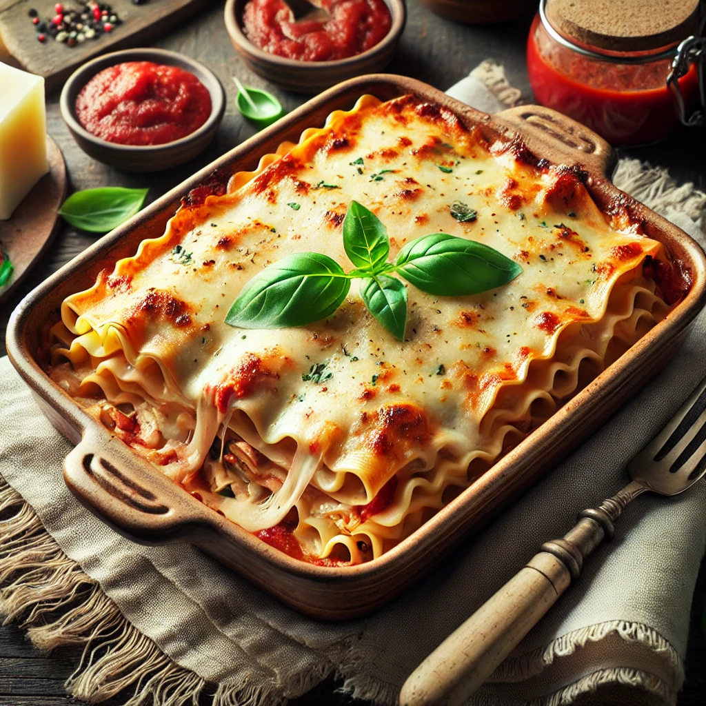

Back to Home
Perfect Turkey Lasagna Recipe

Description
This turkey lasagna recipe combines the comfort of a classic dish with a healthier twist. Lean ground turkey is layered with creamy ricotta, savory marinara, and gooey mozzarella, creating a hearty yet balanced meal. Using ready-to-cook lasagna noodles makes this dish incredibly convenient while maintaining its indulgent flavor. Whether you're hosting a family dinner or meal-prepping for the week, this lasagna is sure to impress!
Perfect for a cozy evening or as a make-ahead freezer meal, this turkey lasagna will quickly become a household favorite. The combination of lean turkey and rich cheeses offers a satisfying, guilt-free twist on a timeless Italian classic.
Ingredients
- Ground turkey (1 lb)
- Ready-to-cook lasagna noodles (about 9-12 sheets)
- 1 onion, diced
- 2 cloves garlic, minced
- Marinara sauce (2 jars or about 4 cups)
- Ricotta cheese (15 oz)
- Egg (1 large)
- Shredded mozzarella cheese (3 cups)
- Grated Parmesan cheese (1/2 cup)
- Italian seasoning (1tsp)
- Salt and pepper (to taste)
- Fresh basil (Optional, for garnish)
Steps
- Prepare the Turkey Sauce:
- Heat a skillet over medium heat and drizzle with olive oil.
- Sauté diced onion until translucent, then add minced garlic.
- Cook the ground turkey until browned, seasoning with salt, pepper, and Italian seasoning.
- Stir in marinara sauce and let simmer for 10 minutes.
- Mix the Ricotta Layer:
- In a bowl, combine ricotta, 1 cup of mozzarella, the egg, and Parmesan cheese. Stir until smooth and creamy.
- Assemble the Lasagna:
- Preheat oven to 375°F (190°C).
- Spread a thin layer of turkey marinara sauce at the bottom of a 9x13 baking dish.
- Lay down a single layer of ready-to-cook noodles.
- Spread a layer of the ricotta mixture over the noodles, followed by a layer of sauce and mozzarella.
- Repeat the layers (noodles, ricotta, sauce, mozzarella) until all ingredients are used, ending with sauce and a heavy sprinkle of mozzarella.
- Bake the Lasagna:
- Cover with foil, tenting it slightly to prevent it from sticking to the cheese, and bake for 25 minutes.
- Remove foil and bake for an additional 15-20 minutes, or until the cheese is golden and bubbly.
- Rest and Serve:
- Let the lasagna rest for 10-15 minutes before slicing.
- Garnish with fresh basil and serve hot.